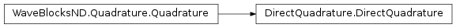

DirectQuadrature¶
About the DirectQuadrature class¶
The WaveBlocks Project
@author: R. Bourquin @copyright: Copyright (C) 2010, 2011, 2012, 2013, 2014, 2015, 2016 R. Bourquin @license: Modified BSD License
Inheritance diagram¶
Class documentation¶
-
class
WaveBlocksND.DirectQuadrature[source]¶ -
get_description()[source]¶ Return a description of this quadrature object. A description is a
dictcontaining all key-value pairs necessary to reconstruct the current instance. A description never contains any data.
-
get_qr()¶ Return the
QuadratureRulesubclass instance used for quadrature.Returns: The current instance of the quadrature rule.
-
perform_build_matrix(row, col)[source]¶ Computes by standard quadrature the matrix elements
 for a general function
for a general function
 with
with  .
.Parameters: - row – The index
 of the component
of the component  of
of  .
. - row – The index
 of the component
of the component  of
of  .
.
Returns: A complex valued matrix of shape
 .
.- row – The index
-
perform_quadrature(row, col)[source]¶ Evaluates by numerical steepest descent the integral
 for a polynomial
function with .
for a polynomial
function with .Parameters: - row – The index of the component of .
- row – The index of the component of .
Returns: A single complex floating point number.
- row – The index
-
set_qr(QR)¶ Set the
QuadratureRulesubclass instance used for quadrature.Parameters: QR – The new QuadratureRuleinstance.
-